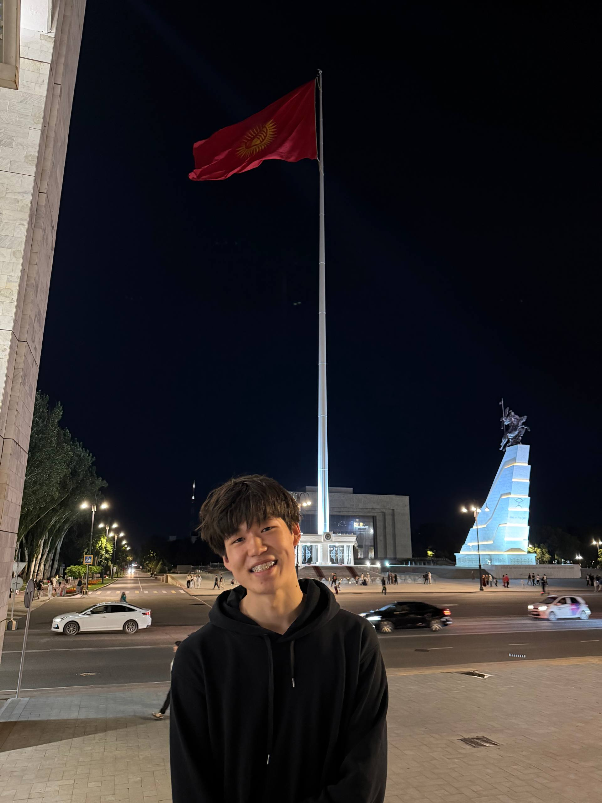

THE FIRST VIDEOS
It started
at school.
Azat began creating videos during his school years. That is where his content-making journey started.
KYRGYZSTAN / TIKTOK CREATOR
Small town. Big story.
From a village near Tokmok to a community of 270K on TikTok. Get to know the person behind the videos.
Explore his story.jpg)
01 / THE PERSON
Azat is a content creator from Kyrgyzstan who started making videos while he was still at school.
He shares a wide range of content on TikTok. His story brings together a small-town beginning, hard work, and a moment in Almaty that introduced him to more people.
A little bit of everything. Always Azat.
02 / THE JOURNEY
From the first school videos
to a much bigger audience.
THE FIRST VIDEOS
Azat began creating videos during his school years. That is where his content-making journey started.
THE ALMATY MOMENT
In Almaty, a police officer gave Azat 3,000 tenge for a taxi so he could travel safely and comfortably. The moment helped him become better known.
THE COMMUNITY
His TikTok audience has grown to 270K followers, with hard work behind the videos and the journey.

03 / THE ROOTS
Azat was born in a small village in the Chüy region of Kyrgyzstan, near Tokmok. That is where his story began.
BEHIND THE PROFILE
Two younger sisters
and one older sister.
THE CONTENT
Azat doesn't stick to just one type of video. His page is a mix of different content and everyday moments.